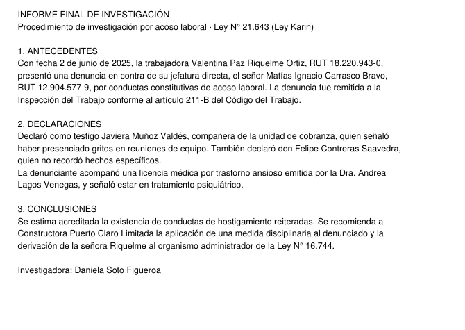
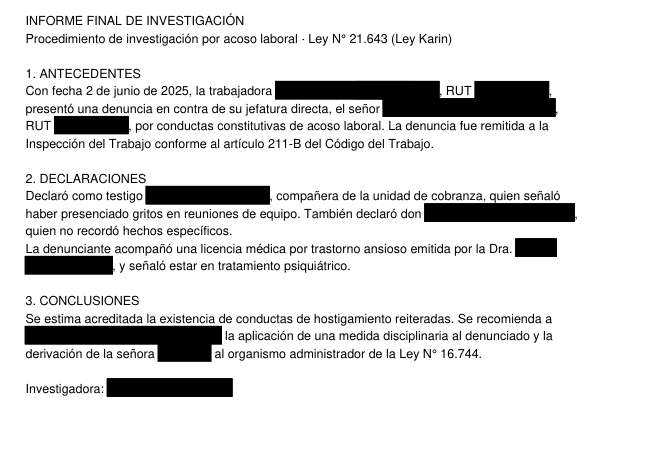

Tachador Jurídico
Prueba de concepto para MLV Abogados · 9 de octubre de 2026 · identidad visual provisional
Tomamos un programa de código abierto para tachar documentos (licencia MIT, funciona sin internet), le agregamos el español y un Paquete Chile, y lo probamos con documentos jurídicos ficticios. Ningún dato real se usó ni salió del computador.
Seudonimiza, no anonimiza. Cambia los datos que identifican a una persona por etiquetas. La copia sigue siendo un dato personal para la Ley 21.719 y se trata como tal: puede volver a vincularse con la persona (el original queda en el computador) y conserva a la vista datos sensibles y otros indirectos (ver «Lo que hay que decir con claridad»).
Qué detecta el Paquete Chile
- RUT y RUN, con o sin puntos, comprobando el dígito verificador; pasaportes y DNI con rótulo.
- Personas con dos apellidos, aunque no lleven «don» ni «señora» (diccionario de 438 nombres y 437 apellidos usados en Chile).
- Causas: Rol C-…, RIT O-…, T-…, RUC de fiscalía. Propiedad: fojas y número del Conservador, rol de avalúo.
- Direcciones con depto. y oficina, comunas, teléfonos +56 y celulares, cuentas bancarias, patentes, empresas SpA, Ltda., S.A. y EIRL.
- Lo que respeta: tribunales, servicios públicos, leyes («Ley Karin»), códigos y fórmulas de escrito («PRIMER OTROSÍ», «POR TANTO»).
Resultados
| Versión | 4 documentos de ajuste | 2 documentos nuevos | Términos jurídicos respetados |
|---|---|---|---|
| Programa original (inglés y finés) | 31 / 45 | 11 / 16 | 5 / 21 |
| Con español, sin Paquete Chile | 26 / 45 | 11 / 16 | 12 / 21 |
| Con español y Paquete Chile | 45 / 45 | 16 / 16 | 21 / 21 |
Documentos: contrato de trabajo, informe de investigación por Ley Karin, demanda laboral, compraventa con correo del cliente, finiquito y acta de mediación familiar. Se cuenta como error que quede a la vista cualquier pedazo de un dato (por ejemplo, el número de la casa).
Antes y después (PDF real, ficticio)


Lo que hay que decir con claridad
- Es una prueba pequeña: 6 documentos escritos por nosotros. Con documentos reales del estudio el resultado será menor; por eso la revisión humana es obligatoria.
- Los datos sensibles (salud, afiliación sindical) hoy quedan a la vista: en el informe Ley Karin, el diagnóstico sigue legible. Hace falta una alerta para que el abogado decida.
- También quedan a la vista fechas, cargos («jefatura directa»), edad, nacionalidad, profesión y estado civil. Juntos pueden bastar para reconocer a alguien: por eso el resultado no es anónimo.
- No probado aún: documentos escaneados, tablas, notas al pie, texto en imágenes (timbres, firmas).
- Revisando el programa original encontramos y corregimos un error: al procesar archivos ignoraba los tipos de dato agregados (los RUT no se tachaban en el PDF). Por eso no conviene usarlo «tal cual».
Siguiente paso propuesto (Fase 1)
- Alertas de datos sensibles y dos modos con nombre claro: seudonimizar (con llave protegida) y anonimizar (sin vuelta atrás).
- Interfaz y etiquetas en español; ventana de revisión probada en los equipos del estudio.
- Registro de cada tratamiento sin datos personales; instalador para Windows.
- Prueba con 30 a 50 documentos tipo del estudio, tachados y revisados por un abogado antes de usarlos.
Herramienta de apoyo: seudonimiza, no anonimiza. No reemplaza la revisión profesional.